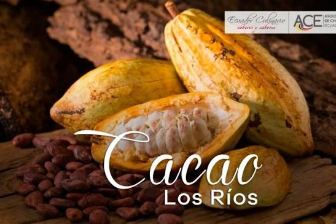
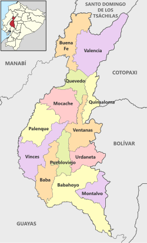
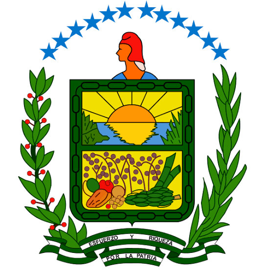
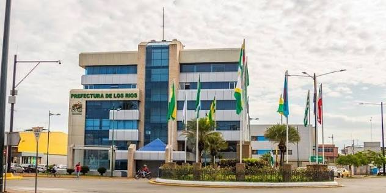
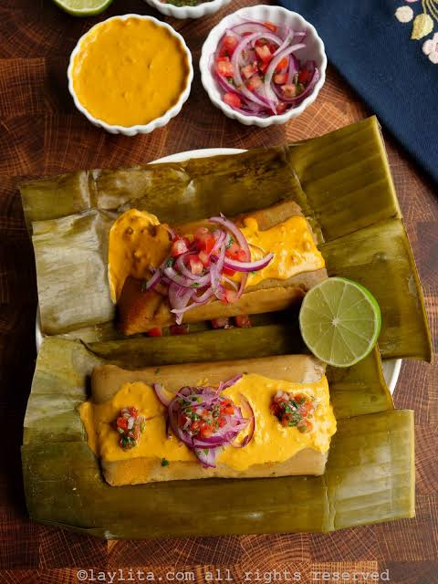
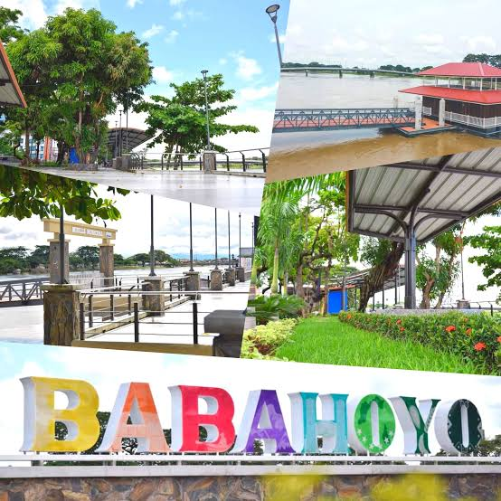

Orígenes, Historia y la Pepa de Oro
La provincia de Los Ríos fue creada oficialmente el 6 de octubre de 1860[cite: 7]. Su desarrollo histórico ha estado profundamente ligado a la agricultura y al comercio fluvial a través de sus caudalosos ríos[cite: 7].

Durante los siglos XIX y XX, la región se convirtió en el motor económico del país gracias al boom del cacao fino de aroma, conocido mundialmente como la "Pepa de Oro", moldeando la identidad y riqueza cultural de los fluminenses[cite: 7].
Los 13 Cantones de la Provincia
Los Ríos cuenta con una extensión territorial organizada en 13 cantones dinámicos, desde Buena Fe y Valencia en el norte, hasta Babahoyo y Montalvo en el sur[cite: 8].

Cada cantón aporta una riqueza particular a la provincia, destacando por su producción agrícola, comercio y tradiciones arraigadas a la costa ecuatoriana[cite: 8].
Gobierno Provincial y Símbolos
La administración y desarrollo de la provincia están coordinados desde el gobierno autónomo descentralizado, velando por el progreso de sus habitantes[cite: 9].

Escudo Oficial: Refleja la labor agrícola, la riqueza fluvial y el esfuerzo de su gente[cite: 17].

Prefectura: Sede institucional encargada de la vialidad, producción y desarrollo provincial.
Gastronomía Tradicional
La culinaria fluminense es un deleite que combina los frutos del río y de la tierra fértil. Entre sus platos más representativos se encuentran los tradicionales bollos acompañados de curtido y salsa de maní[cite: 10, 15].

Los sabores criollos y los amasados de verde forman parte fundamental de la identidad culinaria que se disfruta en cada rincón de la provincia[cite: 10].
Turismo y Belleza Fluvial
Los atractivos turísticos de Los Ríos ofrecen paisajes naturales incomparables, malecones pintorescos y una hermosa vista hacia la red de ríos que da nombre a la provincia[cite: 12, 14].

Lugares como el malecón de Babahoyo invitan tanto a locales como a visitantes a disfrutar de un ambiente cálido, paseos en botes y la hospitalidad característica de la cultura montuvia[cite: 12, 14].